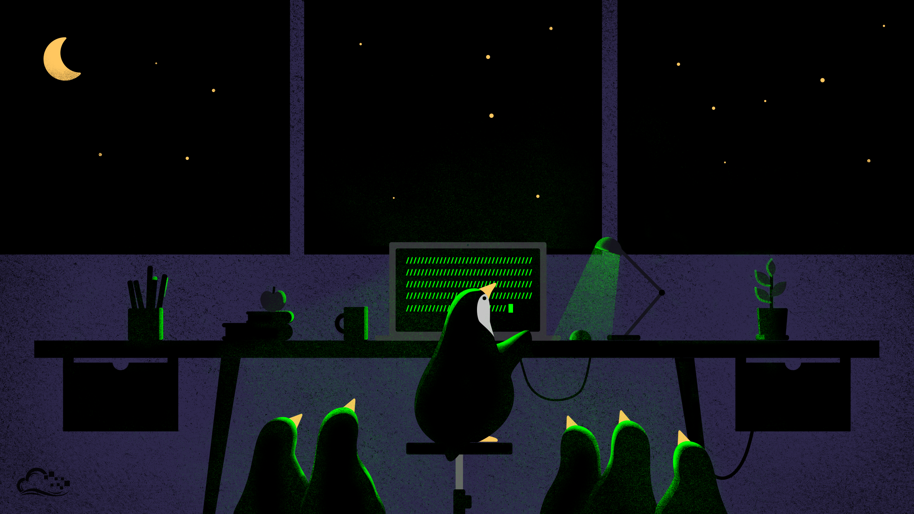

Made for everybody
What NOT To Do Some USB Writing utilities alter the labels
the partitions included in the ISO image. This
causes the boot to fail. There are workarounds… Read More »

Your data is not ours
Big thanks to DevNul for writing this at the forum ! Create a new machine with your favorite name, for example –> EndeavourOSMachine Folder: as…

Customization
Installer tips (calamares) Our default installer in the live environment is Calamares, so that you can have a smooth and friendly experience installing EndeavourOS on…

Lightweight System
Big thanks to DevNul for writing this at the forum ! Create a new machine with your favorite name, for example –> EndeavourOSMachine Folder: as…

Personalization
Installer tips (calamares) Our default installer in the live environment is Calamares, so that you can have a smooth and friendly experience installing EndeavourOS on…

Updation
Big thanks to DevNul for writing this at the forum ! Create a new machine with your favorite name, for example –> EndeavourOSMachine Folder: as…
OUR FLAVOURS

Learn More